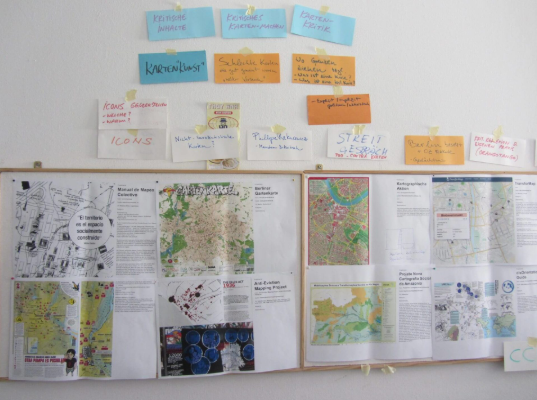
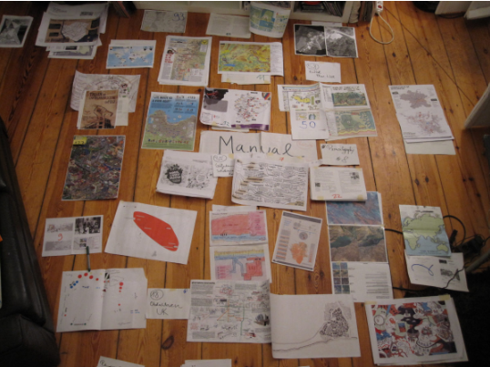
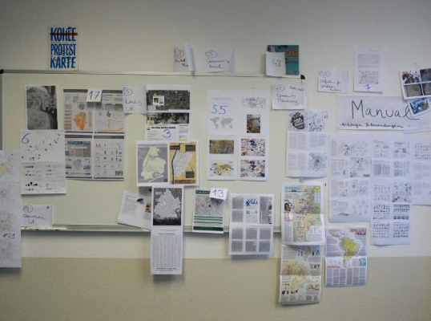

About
Who is kollektiv orangotango?
kollektiv orangotango was founded in 2008. Since then it has been constantly developing through a network of critical geographers, friends and activists who deal with questions regarding space, power and resistance. With our geographical activism, we seek to support processes and oppositional actors who instigate social change by prefiguring social alternatives. We conduct emancipatory educational work as well as concrete political and artistic interventions. These are supposed to enforce reflections on and changes of social conditions. Through workshops, publications, mappings, excursions, and creative interventions within public space, we collectively learn how to read space and how to initiate emancipatory processes from below. By sticking to the traditions of activist research, we connect theoretical reflections and concrete actions. So far we have engaged in the fields of right to the city, (urban) agriculture, critical pedagogy, alternative housing and solidarity economy, mostly in Europe and also in Latin America. But kollektiv orangotango also functions as a platform for different actions. In the case of Not-an-Atlas, its publication was realized by kollektiv orangotango in cooperation with other activists and academics. That is the reason why it was named kollektiv orangotango+. All of this is happening through collective and self-organized practice. In other words: “We’re going slow, because we’re going far”! If you want to support us to spread This Is Not an Atlas please get in contact with us. For updates please follow us on facebook or check our blog notanatlas.org/blog. If you have any questions, suggestions or critique, please write us at contact@notanatlas.org If you want no know more about us check orangotango.info
How to Edit and Reflect Counter-Cartographies Collectively as Activists and Academics?
Both our activist experiences with collective and critical mapping workshops as kollektiv orangotango as well as our individual and academic engagements with maps served as starting points for Not-an-Atlas. In the spring of 2015 we released a Call for Maps in English, German and Spanish, inviting everyone engaged with practices of critical mapping to send us ideas, texts, photos and, of course, maps. We were overwhelmed by the resonance! Nearly 150 submissions found their way to us. Some of them came from places, struggles and activists we had not heard of before; others came from long-time companions and friends. Among them were contributions from well-known critical cartographers, activists, and social movements who have been working with maps for many years; but even more emerging mapmakers sent us their proposals. What followed were exciting three years of discussing, selecting and editing the various maps and projects. Again and again we had to ask ourselves: What actually makes a map (not) critical? And what do we (not) have in mind when working on a counter-atlas? We also had to continually negotiate between more activist and more academic modes of knowledge production – be it in regards to the content of the maps or in regards to our own mode of working and living. With the large number of submissions, Not-an-Atlas quickly outgrew its initial frame in terms of involved languages, time and resources. The resulting process of collective learning therefore included various challenges, personal fluctuations and surprises. There we started to think about an online version of Not-an-Atlas. So we understand notanatlas.org as a continuation of the Not-an-Atlas book. Because we want to continue to share maps, struggles, projects, texts and inspirations online.


